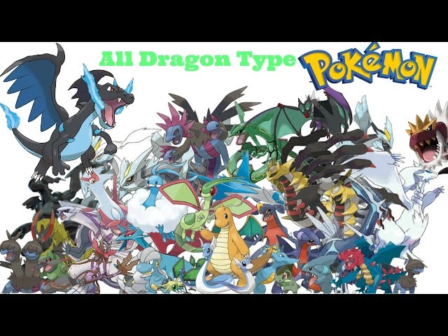

Dragon-Type Pokemon
Dragon-type Pokémon, revered for their majestic presence and awe-inspiring power, are among the most legendary and sought-after creatures in the Pokémon world. These mythical beings, often depicted as serpentine or draconic in appearance, embody strength, wisdom, and ancient mystery. From the ferocious Dragonite to the enigmatic Rayquaza, Dragon-type Pokémon command respect and admiration from trainers and researchers alike. One of the most iconic Dragon-type Pokémon is Charizard. While primarily known as a Fire/Flying-type, Charizard's Mega Evolution into Mega Charizard X grants it the Dragon typing, unleashing its latent draconic powers. With its fiery breath and formidable wingspan, Mega Charizard X embodies the fiery fury of a dragon, capable of incinerating foes with a single blast of its flames. Its fearsome appearance strikes awe into the hearts of opponents, solidifying its reputation as a true dragon in both appearance and power. Another legendary Dragon-type Pokémon is the awe-inspiring Rayquaza. As the guardian of the ozone layer and master of the skies, Rayquaza is revered as a deity in some cultures. Its emerald scales shimmer with an otherworldly glow, and its vast wings stretch across the heavens. Legends speak of Rayquaza's ability to quell the fury of other legendary Pokémon, bringing balance to the world with its immense power. Trainers who earn Rayquaza's allegiance find themselves blessed with a guardian of unparalleled strength and wisdom. Dragon-type Pokémon are known for their resilience and adaptability in battle, boasting strengths against other Dragon-types as well as resisting Fire, Water, Grass, and Electric-type attacks. However, they are vulnerable to Ice, Dragon, and Fairy-type moves, requiring trainers to employ strategic tactics to overcome these weaknesses. Despite these vulnerabilities, Dragon-type Pokémon remain formidable opponents, capable of unleashing devastating attacks and turning the tide of battle in an instant. Beyond their prowess in battle, Dragon-type Pokémon symbolize the untamed forces of nature and the eternal quest for knowledge and enlightenment. Trainers who journey alongside these mythical creatures are drawn into a world of ancient mysteries and legendary encounters, forging bonds that transcend time and space. Whether soaring through the skies or delving into the depths of ancient ruins, Dragon-type Pokémon continue to captivate the imaginations of trainers and enthusiasts, embodying the eternal allure of the unknown.
